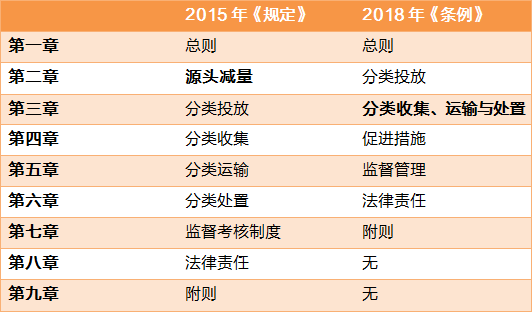

2018 年 4 月，广州市人大常委会出台《广州市生活垃圾分类管理条例》，并批准于 2018 年 7 月 1 日正式实施。
其实早在 2011 年，广州市政府就已经出台了《广州市生活垃圾分类管理暂行规定》，并一举成为全国首部针对生活垃圾分类的规范性文件。到了 2015 年，又基于《暂行规定》修订并颁布了《广州市城市生活垃圾分类管理规定》。现在 2018 年，又在《规定》的基础上颁布了更加细化的改进版《广州市生活垃圾分类管理条例》。
当然啦，相比于此前出台的两部地方规范性文件，此次颁布的《条例》作为人大通过正式立法程序制定的地方法规，将更具效力和权威性。

但据 R 先生观察，其实很多小伙伴都不了解这部默默颁布的《条例》，甚至根本没听过（直到近日，公司接到环监所的告知书 —— 贵单位已被确定为生活垃圾强制分类单位）！那么，下面我们一起来解读一下《条例》吧，毕竟上面说了垃圾不分类可罚两百元呢～
# 第一章 总 则
第一条 为了加强本市生活垃圾分类管理，控制污染，保护环境，节约资源，根据《中华人民共和国固体废物污染环境防治法》《城市市容和环境卫生管理条例》等法律、法规，结合本市实际，制定本条例。
（我国的垃圾分类法律法规仍不完善，对固体废弃物的管理不够规范，实际操作中难以形成约束）
第二条 本条例适用于本市生活垃圾的分类投放、收集、运输、处置和源头减量及其相关活动。
废弃电器电子产品的管理，法律、法规已有规定的，从其规定。
家庭装修废弃物、绿化作业垃圾、动物尸体、粪便按照法律、法规和本市其他有关规定进行管理。
（垃圾分类不是一个口号，也不是一个动作，而是一个产业链，源头减量更需要加强对工业生产的监管和对公众的教育）
第三条 生活垃圾分为以下四类：
（一）可回收物，是指适宜回收和可循环再利用的物品。
（二）餐厨垃圾，是指餐饮垃圾、废弃食用油脂、家庭厨余垃圾以及废弃的蔬菜、瓜果等有机易腐垃圾。（厨余请不要混入纸巾等等废弃物！）
（三）有害垃圾，是指对人体健康或者自然环境造成直接或者潜在危害的物质。
（四）其他垃圾，是指除前三项以外的生活垃圾。（前三类分不好就会沦为其他垃圾，其结果将是焚烧和填埋）
鼓励单位和个人在有处理条件的区域和场所，在前款规定的基础上对生活垃圾进行更为精准的分类。
（这是典型的 “四分类”，同时与 “二分类”、“三分类” 并存，但实际上并未发挥其作用，目前仍主要依靠拾荒体系来维持，在垃圾分类产业链未建立起来之前，大部分工作都是徒劳）
第四条 生活垃圾应当分类投放、分类收集、分类运输、分类处置。
（我们可以把分类投放和分类收集称为前端，分类运输和分类处置称为后端，两者要结合起来才有效，任何一个环节的缺失都会导致垃圾分类失败！）
生活垃圾处理应当遵循政府主导、全民参与、城乡统筹、系统推进的原则，实行减量化、资源化、无害化管理。
（这就是我们常说中的 “三化”，思路是正确的）
第五条 市、区人民政府应当加强生活垃圾源头减量和分类工作，建立生活垃圾分类管理联席会议制度，协调解决生活垃圾分类管理工作中的重大事项。
市、区人民政府应当把生活垃圾源头减量和分类管理工作纳入本级国民经济和社会发展规划，确定生活垃圾源头减量和分类管理目标，统筹规划生活垃圾分类投放和收运处置设施布局并优先安排用地和建设，保障生活垃圾源头减量和分类管理的资金投入。
镇人民政府、街道办事处负责本辖区内生活垃圾分类的日常管理工作。
（垃圾分类要纳入政绩考核）
第六条 市城市管理行政主管部门主管本市生活垃圾分类管理工作，组织实施本条例。区城市管理行政主管部门负责本行政区域内生活垃圾的分类管理工作。
环境保护行政管理部门负责生活垃圾集中转运设施、终端处理设施等场所的污染物排放监测，以及有害垃圾贮存、运输、处置过程中污染防治的监督管理工作。
住房建设行政管理部门负责督促物业服务企业开展生活垃圾分类工作，将生活垃圾分类管理纳入物业服务企业的信用管理体系。
商务行政管理部门负责可回收物的回收利用管理工作。
发展改革、教育、财政、国土规划、农业、林业园林、文化广电新闻出版、卫生、工商、质量技术监督、食品药品监管、旅游等行政管理部门和城市管理综合执法机关、供销社按照职责分工，做好生活垃圾源头减量和分类管理的相关工作。
（相关部门太多了，有点绕… 希望能通力合作解决垃圾污染的问题）
第七条 村民委员会、居民委员会应当做好生活垃圾源头减量和分类投放的宣传、指导，将生活垃圾源头减量和分类投放纳入村规民约、社区居民公约，配合镇人民政府、街道办事处组织、动员、督促村民、居民开展生活垃圾源头减量和分类投放工作。
（也不是第一次这么干了，天天喊垃圾分类会让民众反感，民众常说的 “我们分了也没用，清洁工还不是混在一起” 也不是没有道理的）
第八条 工会、共产主义青年团、妇女联合会、科学技术协会等组织应当发挥各自优势，组织开展生活垃圾源头减量和分类的宣传动员，推动全社会共同参与生活垃圾源头减量和分类活动。
鼓励环保组织、志愿者组织等社会公益组织开展生活垃圾源头减量和分类宣传动员活动，共同推动生活垃圾源头减量和分类工作。
再生资源、物业管理、环境卫生、环境保护、酒店、餐饮等相关行业协会应当制定行业自律规范，开展本行业生活垃圾源头减量和分类的培训、技术指导、实施评价，引导、督促会员单位参与生活垃圾源头减量和分类活动。
（政府、企业、NGO 应该各司其职，同时让更多热爱环保事业的年轻人加入）
第九条 城市管理行政主管部门应当依托生活垃圾处理相关设施、场所建立生活垃圾源头减量和分类宣传教育基地并向社会公众免费开放，通过媒体宣传生活垃圾源头减量和分类的知识及政策措施。
教育行政管理部门应当将生活垃圾源头减量和分类投放、回收利用、无害化处理等知识纳入教育教学内容，培养和提高学生和学龄前儿童的生活垃圾源头减量和分类意识。
旅游行政管理部门应当加强对旅行社、导游等从事旅游行业的单位和个人生活垃圾源头减量和分类的宣传教育。从事旅游行业的单位和个人应当督促游客遵守本市生活垃圾分类管理的规定，对不按规定分类投放生活垃圾的游客进行劝导。
来穗人员服务管理行政管理部门应当加强对来穗人员生活垃圾分类的宣传教育，引导、督促来穗人员遵守本市生活垃圾分类管理的规定。
广播电台、电视台、报纸、期刊、网络等媒体应当加强对生活垃圾源头减量和分类的宣传，普及相关知识，增强社会公众的生活垃圾源头减量和分类意识。
（加强垃圾分类宣传教育，建议学校增加废弃物与生命、自然教育等课程）
第十条 区人民政府应当结合经济社会发展实际情况和自然条件，因地制宜地确定农村生活垃圾的投放、收集、运输和处置分类管理模式，按照有关标准科学合理地规划、建设和配置相关设施设备，推进农村生活垃圾就地分类减量和资源回收利用。按照有关规定，将具备条件的农村地区的生活垃圾纳入城市生活垃圾分类收运处理系统。
（将农村难以处理的生活垃圾纳入城市收运处理系统一并处理，将有机质废弃物回归农田，也许创新型企业会有更好的解决方案）
第十一条 产生生活垃圾的单位和个人应当按规定缴纳生活垃圾处理费。
本市按照谁产生谁付费、多产生多付费的原则，逐步建立计量收费、分类计价、易于收缴的生活垃圾处理收费制度。具体办法由市人民政府另行制定。
（想法是美好的，但是如何计算垃圾量，如何监督？）
# 第二章 分类投放
第十二条 市城市管理行政主管部门应当制定生活垃圾分类指南，明确分类的标准、标识、投放规则等内容，并向社会公布。
市城市管理行政主管部门应当会同市商务行政管理部门、市供销总社，编制低值可回收物目录、拟定推动低值可回收物资源化利用优惠政策，报市人民政府批准后组织实施。
（低价值可回收物需要政府补贴，比如食品包装袋、玻璃瓶等等）
区城市管理行政主管部门应当统筹组织镇人民政府、街道办事处制定适合本辖区的生活垃圾分类管理实施方案并组织实施。分类管理实施方案应当包括生活垃圾的投放模式、收集时间、运输线路等内容。
（然而，政府、街道办也不知道怎么做好垃圾分类，不然十年前就已经解决啦）
第十三条 产生生活垃圾的个人应当按照有关规定将生活垃圾分类投放到有相应标识的收集容器内或者指定的收集点。
产生生活垃圾的个人应当遵守下列规定：
（一）厨余垃圾应当沥干后投放。
（二）灯管、水银产品等易碎或者含有液体的有害垃圾应当在采取防止破损或者渗漏的措施后投放。
（三）可回收物应当投入有可回收物标识的生活垃圾收集容器或者预约再生资源回收经营企业回收。
（四）废弃的年花年桔应当按照城市管理行政主管部门指定的时间和地点投放。
（五）废弃的体积大、整体性强或者需要拆分再处理的大件家具，应当预约再生资源回收经营企业、生活垃圾分类收集单位回收，或者投放至指定的回收点。
（六）废弃的电器电子产品应当按照产品、说明书或者产品销售者、维修机构、售后服务机构的营业场所标注的回收处理提示信息预约回收，或者投放至指定的回收点。
产生生活垃圾的单位投放生活垃圾应当遵守本条第一款、第二款的规定，向收集单位交付的生活垃圾应当符合分类标准。
（目前绝大部分制造业只管生产，不管回收，应尽快完善 “生产者责任延伸制度”，即生产者应承担的责任，不仅在产品的生产过程之中，而且还要延伸到产品的整个生命周期，特别是废弃后的回收和处置）
第十四条 餐饮垃圾产生者应当按照环境保护管理的有关规定，对餐饮垃圾进行渣水分离；产生含油污水的，应当油水分离。餐饮垃圾和废弃食用油脂应当单独分类并密闭存放。
集贸市场、超市管理者应当将废弃果蔬菜皮粉碎、脱水预处理后，投放至有餐厨垃圾标识的收集容器内。
（需要建立完善的回收机制，包括硬件设施和适当的奖罚制度，那么问题来了，添置设备的费用由谁来承担？）
第十五条 生活垃圾分类管理实行管理责任人制度。生活垃圾分类管理责任人按照《广东省城乡生活垃圾处理条例》的相关规定确定。
生活垃圾分类管理责任人应当遵守下列规定：
（一）建立责任区生活垃圾分类投放日常管理制度，并公告不同类别的生活垃圾的投放时间、地点、方式等。
（二）开展生活垃圾分类知识宣传，指导生活垃圾投放人分类投放，并向生活垃圾投放人派发或者在生活垃圾投放点的显著位置张贴宣传生活垃圾分类标准、指南、方法的图文资料。
（三）监督责任区生活垃圾分类投放，对单位或者个人不符合生活垃圾分类投放要求的行为，要求其改正；拒不改正的，应当报告所在地的区城市管理行政主管部门处理。
（四）制止混合已分类投放的生活垃圾的行为。
（五）除可回收物可以直接交售外，有害垃圾、餐厨垃圾和其他垃圾应当移交给有经营权的生活垃圾分类收集单位。
（六）建立生活垃圾分类投放管理台账，记录责任区内产生的生活垃圾类别、数量、去向等情况，并于每月十日前向所在地的镇人民政府、街道办事处报送上月的台账。
（希望能开展起来吧，公开有害垃圾、餐厨垃圾和其他垃圾的收集单位和回收渠道，并让民众积极参与）
第十六条 市城市管理行政主管部门应当制定生活垃圾分类收集容器的设置和使用指南。
生活垃圾分类管理责任人应当根据本责任区生活垃圾的产生量、种类等实际情况，按照相关规定合理配置生活垃圾收集容器。
餐饮垃圾产生者应当配置相应数量、符合标准的专用收集容器。
（为什么关注点在厨余的收集容器上呢？更应该关注后端的处理吧）
第十七条 前期物业服务合同、物业服务合同应当包括生活垃圾分类投放的要求、模式以及投放结果不符合分类标准的相关责任等内容。
实行小区清扫保洁服务外包的物业服务企业，应当将生活垃圾分类投放要求纳入清扫保洁服务合同，并对生活垃圾投放结果不符合分类标准的责任作出相应约定，督促保洁员协助居民开展生活垃圾分类投放工作。
市住房建设行政管理部门应当将本条第一款规定的内容纳入其制定的前期物业服务合同、物业服务合同示范文本。
（听说居委会、物业、业委会之间有矛盾呀，究其原因是各方的利益不一致）
第十八条 市商务行政管理部门应当编制可回收物目录，组织编制可回收物回收网点布局规划，合理布局可回收物分拣中转站、分拣中心以及回收点，并会同市城市管理行政主管部门加强再生资源回收体系和生活垃圾分类收运体系的衔接。没有条件单独设置可回收物回收点的，应当与生活垃圾收集点合并设置。
市供销总社应当按照职责分工建设和运营与生活垃圾分类收运设施相配套的可回收物分拣中转站和分拣中心，建立可回收物回收利用信息平台，向社会公众提供预约回收服务以及可回收物目录、交易价格、回收方式等信息。
从事可回收物回收利用的经营者，其经营场所选址和设置应当符合再生资源回收网点布局规划和设置要求，通过预约回收或者在可回收物回收点定时定点回收等方式提供便民回收服务。
（近期很多从事废品回收的都被端走了，难道准备把整个垃圾分类系统都交给供销社来打造？）
第十九条 电器电子产品生产者应当按照有关规定自行或者委托销售者、维修机构、售后服务机构、废弃电器电子产品回收经营者回收废弃电器电子产品。
回收废弃电器电子产品的企业可以预约回收或者在指定收集点进行定点回收，对收购的废弃电器电子产品应当登记、建立资料档案。
（电子废弃物处理不当会造成很大的污染）
第二十条 镇人民政府、街道办事处可以通过招募志愿者或者向第三方购买服务等方式，在居住区设立生活垃圾分类指导员，普及生活垃圾分类知识，指导、督促居民开展生活垃圾分类投放。
（宣传疲劳… 希望能有更多有趣的活动，不单只是派传单）
# 第三章 分类收集、运输与处置
第二十一条 已分类投放的生活垃圾应当分类收集、分类运输、分类处置。
生活垃圾分类管理责任人发现生活垃圾投放不符合分类标准的，应当要求投放人进行分拣后再行投放；投放人不按标准分拣的，生活垃圾分类管理责任人可以拒绝其投放。
生活垃圾收集、运输单位发现交付收集、运输的生活垃圾不符合分类标准的，可以拒绝接收。
生活垃圾分类管理责任人和收集、运输单位拒绝投放、接收不符合分类标准的生活垃圾的，应当及时报告所在地的区城市管理行政主管部门。区城市管理行政主管部门应当在接到报告后二十四小时内进行处理。
（需要公开聘选一大批社会监督员才行）
第二十二条 市、区人民政府应当按照有关技术标准、技术规范，组织建设与生活垃圾分类管理相适应的转运站、终端处理设施，并配置分类运输车辆等设施设备。
第二十三条 餐厨垃圾、其他垃圾应当每天定时收集；有害垃圾、可回收物应当按照收集单位与生活垃圾分类管理责任人约定的时间定期收集。
市城市管理行政主管部门应当根据城市交通状况，科学合理地确定生活垃圾的运输时间和路线，与其他社会车辆实行错峰运行。具备条件的，生活垃圾应当安排在夜间运输。
第二十四条 区城市管理行政主管部门应当建设有害垃圾集中点临时存放有害垃圾。有害垃圾集中点应当符合危险废物贮存污染控制要求。
有害垃圾除直接交由具有危险废物经营许可证的单位处置外，应当及时移交环境保护行政管理部门设置的危险废物贮存点贮存。
第二十五条 从事生活垃圾分类收集、运输的单位，应当执行行业规范和操作规程，并遵守下列规定：
（一）根据服务区域内各责任区投放生活垃圾的类别、数量、作业时间等要求，配备相应的收集、运输设备和作业人员，把生活垃圾收集点的垃圾收集、运输至符合规定的生活垃圾转运站、贮存点或者处置场所。
（二）运输车辆应当实行密闭化运输，并在车身清晰地标示所运输生活垃圾的类别标识。
（三）按照规定的时间、频次、路线和要求分类收集、运输生活垃圾，不得沿途丢弃、遗撒生活垃圾或者滴漏污水。
（四）转运站的生活垃圾应当密闭存放，存放时间不得超过十二小时。
（五）建立污染物排放监测制度和措施，按照工程技术规范、操作规程处理废水、废气、废渣、噪声等，保持收集、运输设施和周边环境整洁。
第二十六条 区城市管理行政主管部门应当建立生活垃圾转运机制，合理布局并按照有关规定和标准建设生活垃圾转运站，规范生活垃圾转运作业的时间、路线和操作规程，做好环境污染防治工作。
第二十七条 生活垃圾应当采取下列方式进行分类处置：
（一）有害垃圾由具有危险废物处置经营许可证的单位进行无害化处置。
（二）可回收物由再生资源回收利用企业或者资源综合利用企业采用循环利用的方式进行处置。
（三）废弃食用油脂由特许经营企业进行处置。
（四）餐饮垃圾由特许经营企业进行处置或者按规定就近就地自行处置。
（五）厨余垃圾以及集贸市场、超市的有机易腐垃圾由具有经营许可证的处置单位进行处置或者按规定就近就地自行处置。
（六）其他垃圾由具有经营许可证的处置单位进行无害化焚烧，超过无害化焚烧能力或者因紧急情况不能焚烧的，可以进行应急卫生填埋。
前款规定的就近就地自行处置办法由市城市管理行政主管部门另行制定。
（都是末端处理思路… 而且很多连影子都没见着）
第二十八条 市、区人民政府应当根据集约节约利用土地、提高生活垃圾处置能力、降低污染物排放等需要，建立集无害化焚烧、餐厨垃圾资源化利用、再生资源回收利用、卫生填埋于一体的生活垃圾循环经济产业园，园区内基础设施应当共建共享。
（无害化焚烧？？ Are you kidding me ？）
第二十九条 本市不得新建、扩建生活垃圾临时堆放点和简易填埋场。已经建成的生活垃圾临时堆放点和简易填埋场应当按规定关停，不得继续运行。
市城市管理行政主管部门应当会同市环境保护等行政管理部门，制定生活垃圾临时堆放点和简易填埋场关停后的综合治理方案并限期治理。
综合治理方案应当经过专家论证，并征求生活垃圾临时堆放点或者简易填埋场所在地的区人民政府的意见，报市人民政府批准后实施。
第三十条 生活垃圾运输车辆应当安装定位和监控系统并保持正常运行。
市城市管理行政主管部门应当会同市质量技术监督行政管理部门制定本市生活垃圾分类运输车辆的管理标准。
第三十一条 生活垃圾分类处置设施的建设应当符合国家、省和本市有关标准、技术规范；生活垃圾处置设施所采用的技术、设备、材料应当符合国家标准。
鼓励生活垃圾处置服务单位采用高于国家标准或者行业标准的先进处理技术。
第三十二条 从事生活垃圾分类处置的单位应当遵守下列规定：
（一）对场（厂）区道路、厂房和垃圾处置设施设备及其辅助设施设备进行定期保养和维护，确保设施设备安全运行，并将年度检修计划报送城市管理行政主管部门备案。
（二）健全安全管理制度，配备安全设施，制定安全应急预案，确保处置设施安全稳定运行。
（三）配备污染物治理设施并保持其正常运行，按照规定及时处理废水、废气、废渣、噪声等，防止对周边环境造成污染。
（四）制定环境监测计划并进行环境监测，委托具有相应检测资质的单位进行环境检测，定期向所在地的区城市管理行政主管部门和环境保护行政管理部门报告监测结果。
（五）在处置设施运营场所安装污染物排放在线监测系统，并保持在线监测系统与城市管理行政主管部门、环境保护行政管理部门的监管系统互联互通。
（六）建立环境信息公开制度，定期向社会公开排放的主要污染物的名称、排放方式、排放浓度和总量、超标排放情况，以及生活垃圾处置设施的运行情况等。
（七）资源化利用餐饮垃圾和废弃食用油脂形成的产品应当符合质量标准。
（八）建立管理台账，记录每日接收、处置生活垃圾的数量、类别，处置过程中排放的废渣、废水等废弃物，以及餐饮垃圾和废弃食用油脂资源化利用形成的产品质量检验报告、出厂销售流向等情况，并于每月十日前向所在地的区城市管理行政主管部门报送上月的台账。
（九）不得擅自停业、歇业；确需停业、歇业的，应当提前半年向市城市管理行政主管部门提交书面报告，经依法核准后方可停业、歇业。
（十）国家、省、市的其他有关规定。
（要求还挺多的…）
第三十三条 餐饮垃圾、废弃食用油脂的收运和处置实行特许经营，按规定就近就地自行处置的除外。
市城市管理行政主管部门可以根据生活垃圾分类投放和收运、处置设施的规划布局和建设方案，结合各区餐饮垃圾、废弃食用油脂产生量，将全市划分为若干服务区域，对餐饮垃圾、废弃食用油脂实行统一收运、集中定点处置。
城市管理行政主管部门应当通过公开招标等市场竞争方式选择具备特许经营条件的餐饮垃圾、废弃食用油脂分类收运、处置单位。
（如何取得特许经营权？为什么我看到很多餐厅都是大半夜才有人来收厨余垃圾？）
第三十四条 城市管理行政主管部门应当与取得特许经营权的餐饮垃圾、废弃食用油脂收运、处置单位签订服务合同，约定餐饮垃圾、废弃食用油脂收运、处置的服务范围、标准、期限、价格以及市场退出机制、违约责任等内容。
餐饮垃圾产生者应当与取得餐饮垃圾、废弃食用油脂特许经营权的收运、处置单位签订收运、处置合同，按规定就近就地自行处置餐饮垃圾的除外。收运、处置合同应当明确收运的时间、频次、数量以及废弃食用油脂回收价格等内容。
本条例生效前已经依法与生活垃圾分类收运、处置单位签订餐饮垃圾、废弃食用油脂收运、处置合同并已实际履约的，可以继续按照合同收运、处置，餐饮垃圾产生者应当向所在地的区城市管理行政主管部门备案。
第三十五条 餐饮垃圾、废弃食用油脂收运、处置实行联单管理，并逐步实行电子联单信息化管理。
联单应当由收运、处置单位向餐饮垃圾产生者所在地的区城市管理行政主管部门领取并定期交回备查联。联单由市城市管理行政主管部门统一监制。
交接餐饮垃圾、废弃食用油脂应当现场核对联单载明事项。联单载明事项与实际情况不相符的，交接双方应当按照实际情况记载联单并交接。交付方拒绝按照实际情况确认联单的，接收方可以拒绝接收餐饮垃圾、废弃食用油脂，并及时报告区城市管理行政主管部门处理。
# 第四章 促进措施
第三十六条 市、区人民政府应当遵循资源节约、环境保护与生产生活安全性原则，建立涵盖生产、流通、消费等领域的生活垃圾源头减量工作机制，明确生活垃圾源头减量综合管理部门和相关行政管理部门的职责，鼓励单位和个人在生产、生活中减少生活垃圾。
发展改革、工业与信息化、财政、农业、商务、工商、旅游等行政管理部门应当根据各自职责，制定有利于生活垃圾源头减量的政策措施。
（鼓励单位和个人在生产、生活中减少生活垃圾，比如减少肥皂剧，增加环保的曝光率？）
第三十七条 发展改革、工商、质量技术监督、食品药品监管等行政管理部门应当根据国家、省、市对限制产品过度包装的标准和要求，制定具体的行动计划，限制产品过度包装，减少一次性包装材料的使用和包装废物的产生。
第三十八条 农业、工商等行政管理部门应当根据职责分工，采取措施加强对农产品产地、集贸市场和超市等的管理，实行净菜上市、洁净农副产品进城。
发展改革、商务、工商等行政管理部门应当采取措施，推广使用菜篮子、布袋子，加强商场、超市等商品零售场所的管理，按照有关规定限制向消费者提供塑料购物袋。
（应该从顶层设计出发，禁止使用塑料袋）
第三十九条 鼓励商场、超市、便利店等经营者或者管理者就地设立便民回收点。
鼓励商品生产者、经营者采用押金、以旧换新、设置自动回收机、快递送货回收包装物等方式回收再生资源，实现回收途径多元化。
（由此将催生一批回收设备供应商，希望能做到统一规范些吧，押金制需要普遍达成共识才行，不然这家收押金，那家不退押金就麻烦了）
第四十条 餐饮、娱乐、宾馆等服务性经营者应当设置可重复使用消费用品的推荐标识，通过价格优惠等措施鼓励消费者减少或者不使用一次性消费用品。
单位和个人应当减少使用或者按照规定不使用一次性消费用品，优先采购可重复使用和再利用产品。
（有些人偏爱一次性用品，认为更加方便和卫生，其实都是假象，我们应该明明白白地活着）
第四十一条 餐饮经营者应当在餐饮服务场所设置不剩菜的醒目标识，并在提供服务的过程中向消费者提示适量点餐。
第四十二条 新建的集贸市场、超市应当同步配置果蔬菜皮就近就地处置设施。
区城市管理行政主管部门应当统筹已建成并具备条件的集贸市场、超市配置果蔬菜皮就近就地处置设施。
区城市管理行政主管部门应当采取资金扶持、技术指导等方式，统筹推进本区餐饮垃圾产生者以及有条件的居住区安装符合标准的餐饮垃圾、厨余垃圾处置装置，就近就地处置餐厨垃圾。
（如何配备就近就地处置设施，谁来配备？谁能使用？）
第四十三条 国家机关、国有企事业单位和使用财政资金的其他组织应当实行绿色办公，推广无纸化办公，优先采购节能、节水、可以循环利用和资源化利用的办公用品。
（难！老油条太多，自私的老油条更多…）
第四十四条 鼓励和支持生活垃圾处理的科技创新，推动生活垃圾源头减量、分类投放、无害化处置以及再生资源利用等新技术、新工艺的引进、研发与应用。
第四十五条 市人民政府应当采取相应的政策措施，通过政府和社会资本合作、投资补助、政府购买服务、特许经营、承包经营、租赁经营等方式，鼓励和引导社会资本参与生活垃圾源头减量和分类投放、收集、运输、处置以及回收利用等。
（必须的）
第四十六条 本市建立生活垃圾源头减量和分类的鼓励和引导机制，通过多种方式鼓励和引导居民开展生活垃圾源头减量和分类工作，对成绩突出的单位、个人和生活垃圾分类管理责任人给予奖励。具体办法由市人民政府另行制定。
区城市管理行政主管部门应当建立居民生活垃圾分类投放示范点，引导和督促居民开展生活垃圾分类投放。
（有奖励，赶紧行动呀）
第四十七条 产生生活垃圾的区跨区域处置生活垃圾的，应当遵循 “谁受益、谁补偿” 的原则，按照进入生活垃圾终端处理设施的垃圾处置量，向生活垃圾终端处理设施所在区支付生态补偿费，用于周边环境治理、公共服务设施建设和维护、经济发展的扶持以及村民、居民回馈等。具体办法由市人民政府另行制定。
（为什么允许跨区域处置？）
# 第五章 监督管理
第四十八条 市、区人民政府应当建立健全生活垃圾源头减量和分类的综合考核制度，将本级行政管理部门、下一级人民政府履行生活垃圾源头减量和分类管理职责的情况纳入管理绩效考评指标，定期公布考评结果。
有关行政管理部门在开展文明单位、文明社区、文明乡村、文明街道、文明家庭等精神文明创建活动以及卫生单位、卫生社区（村）等卫生创建活动中，应当将生活垃圾源头减量和分类的情况纳入评选标准。
（好，但是要公开透明，接受民众监督）
第四十九条 市城市管理行政主管部门应当对生活垃圾的组成、性质、产量等进行常规性调查，并对生活垃圾分类情况进行定期评估。调查结果和评估报告应当向社会公布。
市、区城市管理行政主管部门应当建立和完善生活垃圾分类监督检查制度，对生活垃圾分类管理责任人和从事生活垃圾分类收集、运输、处置服务的单位进行监督检查，并及时向社会公开检查情况以及查处结果。
第五十条 市、区环境保护行政管理部门应当按照有关规定对餐厨垃圾无害化就近就地处置设施、生活垃圾集中转运和处置设施以及循环经济产业园的处置设施产生的废水、废气、废渣、噪声等污染物排放情况进行监测，并按规定向社会公布监测信息。
第五十一条 市、区城市管理行政主管部门应当制定本行政区域生活垃圾收集、运输、处置应急预案，建立应急机制。
生活垃圾分类收运、处置服务单位应当根据市、区城市管理行政主管部门制定的应急预案，编制本单位收集、运输、处置应急预案，并报所在地的区城市管理行政主管部门备案。
因突发性事件造成无法正常收集、运输、处置生活垃圾的，城市管理行政主管部门应当立即启动应急预案，及时安排生活垃圾收集、运输、处置。
第五十二条 本市实行生活垃圾分类社会监督员制度。社会监督员由区城市管理行政主管部门向社会公开选聘，成员中应当包括生活垃圾终端处理设施周边地区村民代表、居民代表、人大代表、政协委员和第三方机构代表等。
社会监督员有权进入生活垃圾收集点、转运站以及终端处理设施等场所，了解生活垃圾分类处理情况以及集中转运设施、终端处理设施运行等情况，查阅环境监测相关数据，并提出意见和建议。
从事生活垃圾分类收集、运输、处置服务的单位应当向社会监督员开放相关场所、提供有关材料和数据并回答询问。
社会监督员发现问题的，应当向城市管理行政主管部门报告，城市管理行政主管部门应当向社会监督员书面反馈处理情况。
第五十三条 市城市管理行政主管部门应当建立生活垃圾分类收集、运输和处置服务单位的信用档案，将服务单位的违规行为和处理结果等信息纳入信用档案和环境卫生服务单位信用评价体系，对服务单位的服务质量和信用等级进行年度评价，并公布评价结果。
第五十四条 市城市管理行政主管部门应当建立全市统一的生活垃圾分类管理信息系统，记录、统计生活垃圾分类投放、收集、运输、处置的类别、数量等信息，并与市商务行政管理部门的资源回收信息系统、环境保护行政管理部门的监管系统实现互联互通。
（嗯嗯，说的都很好）
# 第六章 法律责任
第五十五条 市、区人民政府有关行政管理部门、执法部门和区、镇人民政府及其工作人员有下列行为之一的，由上级主管机关或者监察机关责令改正，对部门给予通报批评，对直接负责的主管人员和其他直接责任人员依法给予处分：
（一）违反本条例第十二条第一款规定，未制定生活垃圾分类指南并向社会公布的。
（二）违反本条例第十二条第二款、第十八条第一款规定，未编制低值可回收物目录或者可回收物目录、拟定推动低值可回收物资源化利用优惠政策的。
（三）违反本条例第十六条第一款规定，未制定生活垃圾分类收集容器的设置和使用指南的。
（四）违反本条例第十七条第三款规定，未将生活垃圾分类投放的要求、模式以及投放结果不符合分类标准的相关责任等内容纳入前期物业服务合同、物业服务合同示范文本的。
（五）违反本条例第十八条第二款规定，未按规定建设和运营可回收物分拣中转站和分拣中心，未建立可回收物回收利用信息平台，或者未向社会公众提供预约回收服务以及可回收物目录、交易价格、回收方式等信息的。
（六）违反本条例第二十九条第二款规定，未制定生活垃圾临时堆放点和简易填埋场关停后的综合治理方案并限期治理的。
（七）违反本条例第三十八条规定，未采取措施实行净菜上市和洁净农副产品进城，未限制商场、超市等商品零售场所向消费者提供塑料购物袋的。
（八）违反本条例第四十九条规定，未对生活垃圾的组成、性质、产量等进行常规性调查，未对生活垃圾分类情况进行定期评估，或者未对生活垃圾分类管理责任人或从事生活垃圾分类收集、运输、处置服务的单位进行监督检查的。
（九）违反本条例第五十条规定，未按照有关标准对餐厨垃圾无害化就近就地处置设施、生活垃圾集中转运和处置设施以及循环经济产业园的处置设施产生的废水、废气、废渣、噪声等污染物排放情况进行监测，或者未按规定公布监测信息的。
（十）违反本条例第五十一条规定，未制定本行政区域生活垃圾收集、运输、处置应急预案，或者未按规定启动应急预案的。
（十一）违反本条例第五十三条规定，未建立生活垃圾分类收集、运输和处置服务单位的信用档案，或者未将服务单位的违规行为和处理结果等信息纳入信用档案和环境卫生服务单位信用评价体系的。
（十二）其他违反本条例规定的行为。
第五十六条 个人违反本条例第十三条第一款或者第二款第一项、第二项、第三项、第四项规定，未按规定将生活垃圾分类投放到指定的收集点或者收集容器内的，由城市管理综合执法机关责令改正，处二百元以下的罚款。
个人违反本条例第十三条第二款第五项、第六项规定，未按规定投放废弃的大件家具或者电器电子产品的，由城市管理综合执法机关处二百元以下的罚款。
产生生活垃圾的单位违反本条例第十三条第三款规定，未按规定投放生活垃圾，交付收集单位的生活垃圾不符合分类标准的，由城市管理综合执法机关责令改正，处五千元以上五万元以下的罚款，并在市政府电子政务信息平台公布处罚结果。
第五十七条 餐饮垃圾产生者或者集贸市场、超市管理者违反本条例第十四条规定，未落实渣水分离、油水分离、单独分类、密闭存放、粉碎脱水等要求的，由城市管理综合执法机关责令限期改正，可以处五千元以上五万元以下的罚款。
第五十八条 生活垃圾分类收集、运输单位有下列情形之一的，由城市管理综合执法机关进行处理：
（一）违反本条例第二十一条第一款规定，混合收集、运输已分类的生活垃圾的，责令限期改正，处一千元以上五千元以下的罚款。
（二）违反本条例第二十五条第二项规定，未在运输车辆上标注所运输生活垃圾的类别标识的，责令限期改正；逾期不改正的，处一千元以上五千元以下的罚款。
（三）违反本条例第二十五条第三项规定，未按规定的时间、频次、路线和要求分类收集、运输生活垃圾的，责令限期改正，可以并处五千元以上五万元以下的罚款；在运输过程中沿途丢弃、撒漏生活垃圾，滴漏污水的，责令限期改正，处一万元以上五万元以下的罚款。
（四）违反本条例第二十五条第四项规定，未按规定在转运站密闭存放生活垃圾或者存放时间超过十二小时的，责令限期改正，可以处五千元以上五万元以下的罚款。
（五）违反本条例第二十五条第五项规定，未按照工程技术规范、操作规程处理废水、废气、废渣、噪声的，责令限期整改，处三万元以上十万元以下的罚款。
第五十九条 生活垃圾分类处置单位有下列情形之一的，由城市管理综合执法机关进行处理：
（一）违反本条例第二十一条第一款规定，混合处置已分类的生活垃圾的，处一万元以上五万元以下的罚款。
（二）违反本条例第三十二条第三项规定，未按规定及时处理废水、废气、废渣、噪声等的，责令限期整改，处三万元以上十万元以下的罚款。
（三）违反本条例第三十二条第八项规定，未建立管理台账并记录相关情况的，责令限期改正；逾期不改正的，处三万元以上十万元以下的罚款。
（四）违反本条例第三十二条第九项规定，未经同意擅自停业、歇业的，责令限期改正，可以处五万元以上十万元以下的罚款。
生活垃圾分类处置单位违反本条例第三十二条第四项、第五项、第六项规定，未按规定制定环境监测计划并进行环境监测，未安装污染物排放在线监测系统，或者未建立环境信息公开制度并公开相关信息的，由环境保护行政管理部门责令限期改正，处二万元以上二十万元以下的罚款；逾期不改正的，责令停产整治。
第六十条 餐饮垃圾产生者或者收运处置单位违反本条例第三十五条第三款规定，未正确履行如实记载或及时报告义务的，由城市管理综合执法机关责令限期改正，可以处五千元以上五万元以下的罚款。
第六十一条 餐饮、娱乐、宾馆等服务性经营者违反本条例第四十条第一款规定，未设置可重复使用消费用品的推荐标识的，由城市管理综合执法机关责令限期改正；逾期不改正的，处一千元以上三千元以下的罚款。
第六十二条 餐饮经营者违反本条例第四十一条规定，未在经营服务场所设置不剩菜标识的，由城市管理综合执法机关责令限期改正；逾期不改正的，处一千元以上三千元以下的罚款。
（监督是个问题…）
# 第七章 附 则
第六十三条 本条例下列用语的含义：
（一）低值可回收物，是指本身具有一定循环利用价值，在垃圾投放过程中容易混入其他类别生活垃圾，单纯依靠市场调节难以有效回收，需要经过规模化回收处理才能够重新获得循环使用价值的废玻璃类、废木质类、废软包装类、废塑料类等固体废物。
（二）再生资源，是指在社会生产和生活消费过程中产生的，已经失去原有全部或者部分使用价值，经过回收、加工处理，能够重新获得使用价值的各种废弃物，包括生活垃圾中的可回收物。
（三）餐饮垃圾，是指餐饮垃圾产生者在食品生产经营活动中产生的食物残余、食品加工废料、过期食品等。
（四）废弃食用油脂，是指在食品生产经营过程中产生的不符合食品安全标准的动植物油脂、从餐饮垃圾中提炼的油脂，以及含油脂废水经油水分离器或者隔油池分离处理后产生的油脂。
（五）厨余垃圾，是指居民在家庭中产生的菜帮菜叶、瓜果皮核、剩菜剩饭、废弃食物等易腐性垃圾。
（六）餐饮垃圾产生者，是指通过即时加工制作、商业销售和服务性劳动等手段，向消费者提供食品的生产经营者，包括餐馆、小食店、快餐店、食堂及提供食品消费的商场、超市等。
第六十四条 本条例自 2018 年 7 月 1 日起施行。